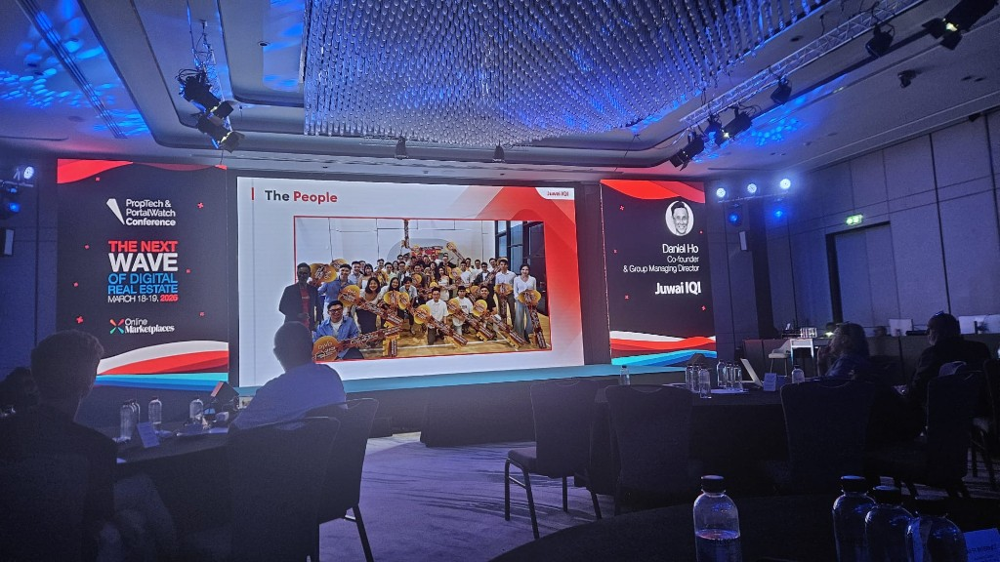

The exponential rise of Juwai IQI — reinventing global real estate platform in the digital era
FY 2023 USD 4.3B total transacted GDV · 35+ countries · 10-yr CAGR 30% (on-deck KPI strip) — story arc: Platform · Technology · People (three interlocking pillars).
Daniel Ho — Co-founder & Group Managing Director
Property Portal Watch Conference — The next wave of digital real estate
From deck — scale & footprint
On-stage KPI strip (FY 2023) — numbers as on deck.
Deck also showed a large group in red shirts — employer / network scale.
From deck — ecosystem model
Building the most complete real estate ecosystem — three interlocking pillars (hexagon graphic on deck).
Slide layout: three interlocking hexagons in a circle — Platform (top), People (bottom left), Technology (bottom right), each with a small icon. Left panel: high-contrast skyline. Message: completeness of the ecosystem, not a single product wedge.
From deck — “The Platform” (where they are active)
World map on deck: countries where Juwai IQI is active. List below matches deck labels; aligns with 35+ countries KPI.
Markets (by region)
- Americas Canada
- Europe Iceland, Netherlands, Germany, Malta, Greece, Italy, Spain, Portugal, Montenegro, Bulgaria
- Middle East & Africa Turkey, Cyprus, Nigeria, Saudi Arabia, Qatar, UAE
- Asia-Pacific Pakistan, India, Malaysia, Singapore, Indonesia, Australia, New Zealand, Brunei, Philippines, Vietnam, Hong Kong, Cambodia, Thailand, Japan, Bangladesh, China, Korea
Platform brands (footer of slide)
Subsidiaries / verticals under the platform umbrella:
From deck — China reach & “geo-blocked” portals
Deck split: Asia leadership / Juwai Global Platform (left) + why Juwai.com matters for China-facing demand (centre).
Left panel (deck)
- We are the leader in Asia — The Juwai Global Platform
- CTA angle: Not using Juwai.com? — ties reach to Chinese / Asia buyers.
- Small stack on white section: Data · Tech · Media (three circles).
Centre headline + quote (as on slide)
International portals are “geo-blocked” in China.
Data hook on slide: supporting article headline — foreign investors spend ~USD 3.7B (Australia context in piece); deck uses it to anchor scale of offshore demand while arguing Western portals lack in-China reach.
In the Asian superpower, the internet is heavily controlled and major sites including Google, Facebook, YouTube and Wikipedia are blocked.But Juwai IQI has Mandarin-language sites based within China.
— realestate.com.au, “Foreign investors spend $3.7bn, top Aussie suburbs they want revealed” (Feb 2024 — day as printed on slide).
Left red panel: “We are the leader in Asia — The Juwai Global Platform” + CTA angle “NOT USING Juwai.com?” White panel top: three circles — Data · Tech · Media.
Takeaway: competitor portals can’t assume the same in-China distribution; Juwai positions in-market Mandarin presence as a structural moat for reaching buyers from China.
Story arc (how the deck reads end-to-end)
- Proof of scale — FY23 USD 4.3B GDV, 35+ markets, 30% 10-yr CAGR above a sea of red-shirt teams.
- Strategic frame — “most complete” ecosystem: Platform + People + Technology (hexagon graphic).
- Geography — world map + subsidiary brands (Juwai.com through Mana Mana).
- China distribution moat — geo-blocked Western portals vs Mandarin sites in-market; $3.7bn headline as demand signal.
- Agent OS — IQI ATLAS: registration → deals → co-broke → performance, with AI Marketing / AI Inventory / AtlasGPT.
- Embedded AI — Aini (coach + content planner) and IQPilot (flows, 24/7 recruitment comms, team bookings).
- Vertical automation — Arrteva-style Follow Up Sequence (feedback → rewards → labels).
- People as proof — golden keys / home-bonus moment (culture + retention).
From deck — “The Technology” (IQI ATLAS)
Agent-facing stack: end-to-end workflow in one ecosystem (mobile app UI on deck). Brand: IQI ATLAS — Juwai IQI. Two deck variants; labels differ slightly (e.g. Atlas ERP vs AtlasGPT, Lead Cam vs Lead CRM, Project Canvas vs Project Centre).
Journey (numbered ring on deck — variant A shows eight beats)
- AI, digital registration & continuous learning (variant B: registration & continuous learning)
- Branding & professional online identity
- Vast portfolio of global projects — manage properties with ease
- Attract prospects & nurture leads — marketing tools
- Navigate sales from offer to close — secure, efficient
- Cooperative agent-to-agent collaboration — expand reach
- Monitor success, analyse performance, increase sales
- Digital transactions & smart deals (called out on full ring; modules: deposits, e-signing, payment gateway)
Module bands (top → bottom on deck)
| Stage | Modules / app areas |
|---|---|
| Registration | AI Marketing; slide A also shows AI monitoring on registration flow |
| Onboarding & training | Training Centre, Event Centre, Help Desk / Helpdesk, IQI Academy |
| Digital presence & branding | QR Code, Agent Homepage, Listings |
| Global project & property Mgmt | Project Canvas (A) / Project Centre (B), IQI Drive, Atlas ERP or AtlasGPT |
| Dynamic listing & content | Property Listing, AI Inventory |
| Performance / tracking | Gamified Dashboard, Performance / My Performance (B) |
| Collaborative selling | Co-broker Centre (A) / Co-broke, Certificate Centre (B), Project Partner, Global Network |
| Digital transactions | Digitalized Deposit, E-signing, digitalised request-budgeting process (B), Manage My Deal, Online Payment Gateway |
| Strategic marketing & leads | Landing Page, Presentation Centre, Video Creator, Graphic Studio, Lead Cam / Lead CRM |
Takeaway (Technology pillar): full agent lifecycle in one app — from signup and training through listings, global inventory, deals, payments, co-broke, and performance — with explicit AI hooks (AI Marketing, AI Inventory, AtlasGPT).
From deck — AI: Aini (two example flows)
One conversational assistant for agents — deck showed two tablet demos side by side (demo user Niel Kingston). Chat input “Ask Aini”. Footer on both panes: “Aini is learning every day. If something seems wrong, please double-check before trusting it.”
1 — Sales strategy
Prompt: “What should I do if I want to double my sales in 2026?”
Aini (on slide, six steps): (1) Market analysis — identify growth pockets; (2) Expand your network — events, referrals; (3) Improve client relationships — service, follow-ups, trust; (4) Leverage technology — Atlas for projects + CRM for automation; (5) Continuous learning — workshops, trends; (6) Set clear goals & track progress.
2 — 30-day social calendar (verbatim structure from slide)
Prompt: “Plan me 30-days schedule for social media campaigns.”
- Week 1 — Introduction & trust: Day 1 intro video; Day 2 motivational quote; Day 3 success story; Day 4 interactive Q&A; Day 5 local landmark/property visual; Day 6 team member spotlight; Day 7 fun fact / myth-bust.
- Week 2 — Educational: Day 8 investment tips blog/video; Day 9 infographic (prep home for sale); Day 10 live webinar / IG Live (first-time buyers); Day 11 customer spotlight; Day 12 legal aspects of buying; Day 13 BTS property tour; Day 14 poll/quiz.
- Week 3 — Engage & grow (visible to Day 17): Day 15 giveaway; Day 16 upcoming events list; Day 17 property video walkthrough.
Takeaway: embedded AI for coaching + marketing ops, wired into the same stack as Atlas/CRM — not a generic chatbot only.
Transcription: Daniel also describes Aini for operational questions — e.g. top/bottom performers in the team, running the business (broader than these two demos).
From deck — IQPilot (testimonials)
Deck: Testimonial — IQPilot (logo: IQ + π) under Juwai IQI. Laptop visual on deck: node-based workflow (messages / branching), same “automation canvas” family as follow-up builders.
Calvin Law — Founder, ACE Team
IQPilot has been incredibly helpful, supporting 24/7 with recruitment leads. Previously manual replies to all basic questions; now common inquiries handled automatically — recruitment smoother and more efficient. Highly recommend.
Muaz — GVP, iRealty Group
Communication a major challenge with a big team. With IQPilot, automating bookings and sending targeted messages to the right group is much easier — saves time, improves internal coordination. Recommended for large teams staying organised.
Product UI (laptop on slide): node-based Flows builder; top tabs include Flows, Knowledge Base, Settings; channel sidebar suggests WhatsApp-class messaging integration.
Takeaway: ops layer for lead/recruitment Q&A, booking automation, and segmented comms — not only external marketing.
Transcription: project-specific auto-replies, surveys, appointments in agent calendar, prep for meetings; ~25% productivity per agent claimed.
Product capture — Arrteva Follow Up Sequence
From product UI (project Arrteva_20251106 · Active). Same ecosystem as platform brand Artteva (deck spelling); UI shows Arrteva. Node workflow for multi-step messaging.
- Module: Follow Up Sequence (tabs: Design, Deep Knowledge, Leads, Assignment, Settings, Advance). Project id on screen:
Arrtiva_20251106. - Personalisation: templates use
{{name}},{{Agent_Name}}in message copy. - Canvas: branching on poll-style buttons — 5 Stars — Excellent, Good (4 stars), It was Okay, Room for Growth; connectors show timed delays (clock icons).
- Rewards path: e.g. FREE Custom Cabinet, Kitchen Accessories, homeowner tips; follow-up node: “have you had a chance to claim your Homeowner Rewards yet?”
- Toggles: Classic Scheduled Messages, Poll Group Trigger Once Only, Send Poll as Buttons; PRO-Tools label in Manage Labels.
Takeaway: no-code-style journey automation + optional Deep Knowledge (RAG-style) for richer replies — pairs with IQPilot-style messaging at scale.
From deck — “The People”
The People — team with oversized golden keys (home-bonus ceremony).

Bonus tiers (as described from the stage — higher levels stack or follow):
- Up to ~50% of price, company pays balance — performance + 3-yr stay after award (repay if leave early) (keys slide; see Q&A transcription)
- Next tier: free car (company-provided vehicle)
- Next tier: added driver (chauffeur / dedicated driver on top of the car benefit)
Session
Company context (public): Juwai IQI combines cross-border listing/marketing (Juwai) with agency network (IQI) — Asia-Pacific and global buyer ↔ seller flows. Expect themes around scale, digital platform, and international real estate.
Text summary below + talk transcription + Whova Q&A with answers.
Talk summary — voice transcription (ASR cleaned)
PPW Bangkok · Daniel Ho. Raw ASR errors corrected where obvious (e.g. B → billion). In speech he once said ~25 countries; deck/elsewhere 35+.
Origin story (~15 years)
IQI started ~15 years ago — photo from second branch opening, six original founders. IQI = holding / transaction business (primary + secondary). Juwai.com = classified/portal side, inside China, helping Chinese-speaking buyers discover international property. Name tie-in: International Quality Investment. Six founders recruiting 200+ agents while “everyone laughed” — big dream as driving force.
Market pain → why IQI
Property investing rests on trust; buyers struggle to trust agents; agents don’t trust each other — underhand tactics, toxic environment. Good agents are hyper-local; clients today travel and buy multiple geographies, but the local star can’t unlock overseas deals (even within Malaysia, agents can’t serve cross-state needs). Industry digitally behind — still print-heavy.
Three blueprints
People — restore trust; culture modules everyone must embrace. Platform — geography + verticals to unlock value. Technology — scale beyond traditional ops.
People pillar in depth
Pre-COVID convention ~4,000 agents. Mission: change lives, habits, realise dreams. Agents called warriors; daily training in branches → uploaded to Academy. Mindset: come in like a child — curious; platform as playground; fall in love with the business and colleagues → collaboration and productivity.
Dreams (property, car, travel, family) → “home owner” campaign: hit performance → buy residential at up to 50% price, company settles the balance. Example cited: over years multiple properties cash-flowing. Car programme: luxury car — company pays down payment; higher performance → year’s instalments paid; higher still → driver (e.g. for school runs). ~eight travel-incentive campaigns per half-year; some achievers six trips/year, expenses paid.
Platform pillar
Malaysia HQ → 35 countries; agent app + QR access to offices worldwide — travellers drop into local offices, collaboration. Cross-border handoffs (e.g. client’s kids to Australia). Verticals: IRHAMY (valuation), IQI Concept (interior/reno), Artteva (kitchen/wardrobe manufacturing), MyKey short-stay + Mana Mana — 3,000+ keys in Malaysia, among largest hospitality operators there. Same client: buy via IQI → renovate Concept → MyKey manage short-term. Juwai serves Chinese-speaking demand for offshore property.
COVID & growth
Juwai merger ~29 Nov; soon after COVID. Focus on digital transaction. First COVID year revenue grew; second year (long SEA lockdown) growth ~80% cited. Large downlines (3,000–5,000 under one leader) scaled via tech.
Technology & AI (spoken, beyond deck)
Agent app = full business suite (marketing, digital deals, access to 1,500+ projects globally). ~300 in-house developers.
Aini: agents ask anything — e.g. team analytics (top 10% performers, bottom 30% “laggards”), to run the business (broader than the slide demos alone).
IQPilot: Campaign flows — when a lead asks about a project, AI responds, personalised follow-up, surveys; books appointments into the agent’s calendar with conversational threads so agents prep meetings. Claim: ~25% productivity uplift per agent.
Closing: frustration with old industry, keep innovating; seen as top-two player in some markets — “just the beginning.”
Audience Q&A — Whova + answers (transcription)
A: paraphrased from live audio ASR (Whova questions; no screenshots on this page).
Scaling + employee benefits
3 votes / 1 vote
Q: Biggest bottleneck scaling brokerage across markets — how did technology help?
Q: What does building a leading employee benefits programme look like?
Mission, compliance, humour
Q: Mission — enabling vs transforming agents?
Q: Compliance with local labour law, distributed workforce?
Q: How long until Juwai staff own 100% of all property worldwide?
Rewards, property award mechanics
Q: Reward non-selling employees?
Q: “Own your property” — 50% company-paid down payment: repay or keep? How many years with company?
Not clearly answered on tape
- Licensing tech to other agencies.
- Sharing / commission from project selling (question truncated in app).
- Rental sharing — how much earned from agents.
Whova fragment “employees” omitted. Slido-vragen staan op een aparte afbeelding in de projectmap.
Deck index + extras
Narrative + Q&A → see Talk summary (transcription) and Whova + answers above.
Numbers (deck vs speech)
- GDV: ~USD 4.3B FY23 (slide). ASR said “million” — error.
- Countries: deck 35+; speech once ~25 — use map slide.
- CAGR: deck prints 30% 10-year; speech also cited last year ~28%.
Soundbites (transcription)
- “Come in like a child” — curiosity, playground, fall in love with the business.
- Changing mindset = “changing your spouse” — why agents have walls.
- ~25% productivity per agent from IQPilot-style automation (stated on stage).
Quick ref
Company: Juwai IQI
Speaker: Daniel Ho — Co-founder & Group Managing Director
Talk: Exponential rise · ecosystem (Platform / Technology / People)
Deck stats: USD 4.3B GDV FY23 · 35+ countries · 10-yr CAGR 30%
China slide data point: realestate.com.au piece — ~USD 3.7B foreign-investor frame (headline on deck).
Incentives: home (performance, 3-yr lock-in) · car tiers · driver · travel · share options (non-sellers).
Active markets: full country list under The Platform section.
China angle: Mandarin in-market sites vs geo-blocked Western platforms (see deck quote).
Tech: IQI ATLAS agent OS — see table + journey in The Technology section.
AI: Aini (team/performance Q&A + slide demos) · IQPilot (~25% productivity, calendar booking) · Arrteva flows.
Property award: performance + 3-yr vesting; early exit → repay company.
Q&A: transcribed — scaling/people, benefits, transform not only enable, AU compliance + REA anecdote, non-seller options, home-award mechanics.